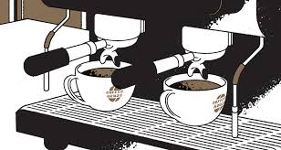

소개
-홈페이지 제작 : 송민수
-홈페이지 제작 이유 : coffee가 대중화 되어가는 가운데 우리는 원두에 대해 잘 알지만, 또 원두에 대한 자세한 지식은 알지 못하는 경우가 많다. 그러한 지식을 채우고자 홈페이지를 만들게 되었다.
-동기 : 처음 커피를 접할 때 향 과 맛이 너무 좋아서 관심이 생기기 시작했습니다. 그뿐만 아니라 원두를 어떻게 볶는지 기계로 내릴지 손으로 내릴지에 따라 맛과 향이 뒤바뀌는게 너무 재미있고 관심을 가지게 되어 이런 홈페이지를 만들 수 있게 되었습니다.

home